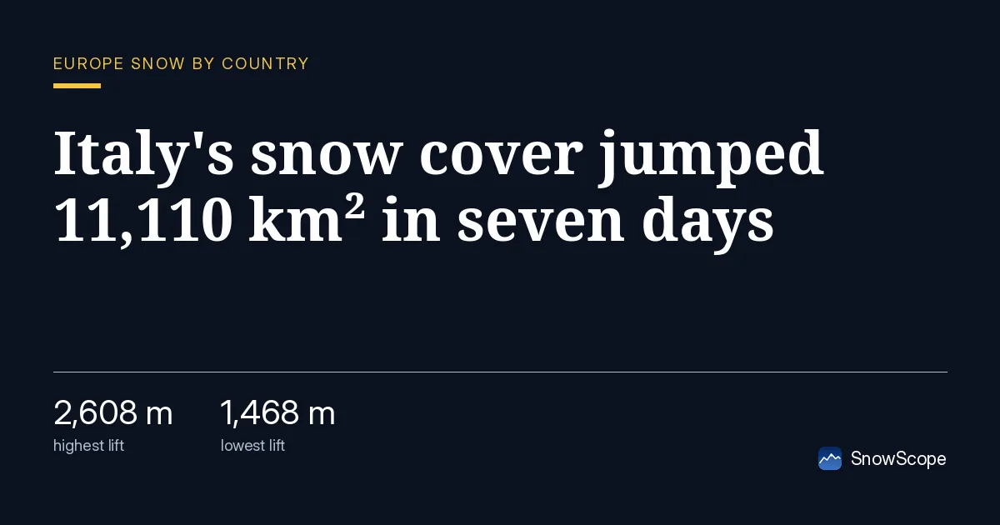

Italy's snow cover jumped 11,110 km² in seven days
Italy's snow-covered area grew by more than half in just one week, climbing from 19,290 km² to 30,400 km². The Aosta Valley led this rapid advance, with 176 cm of fresh snow in the past three days alone.
See the live snow forecast for La Thuile ski in the SnowScope appSnow depth, powder alerts and the 3D map, free.
How the week unfolded
A week ago, on 17 November, snow lay on only 19,290 km² of Italy. Today it covers 30,400 km². This jump of 11,110 km² happened because a series of storms moved through the Alps, bringing sustained snowfall across the high country. The growth was not smooth: some days saw snow cover shrink (the system moved or melted lower down), but the overall trend was climbing higher each time.
The Aosta Valley, in the north-west, bore the brunt of the weather. It received 176 cm of snow in the past 72 hours—almost twice the depth now lying on most ski resorts across Italy. The Piedmont Alps, to the east, caught 55 cm in the same window. Even the central Apennines, where snow is thin, saw 10 cm accumulate. This is the work of genuine Alpine weather, not scattered showers.
| Day | White area | Most new snow in 3 days | Deepest resort |
|---|---|---|---|
| Wednesday 18 November | 19,640 km² | 44 cm | La Thuile ski |
| Thursday 19 November | 24,470 km² | 59 cm | La Thuile ski |
| Friday 20 November | 20,940 km² | 71 cm | Monterosa Ski |
| Saturday 21 November | 24,510 km² | 55 cm | Pfelders |
| Sunday 22 November | 30,500 km² | 57 cm | La Thuile ski |
| Monday 23 November | 28,200 km² | 47 cm | La Thuile ski |
| Tuesday 24 November | 30,400 km² | 43 cm | La Thuile ski |

Where the snow sits now
Snow cover is not evenly spread. Below 1,000 m, almost nothing lies on the ground (2 percent coverage). Between 1,000 and 1,500 m, one third of the terrain is snow-covered, but the layer is thin—averaging 1 cm. The real snow begins above 1,500 m. Between 1,500 and 2,000 m, four out of five areas are white, with an average depth of 5 cm. Above 2,000 m, snow is nearly complete: 98 percent coverage from 2,000 to 2,500 m (average 14 cm), and 99 percent above 2,500 m (average 30 cm).
The snow line sits at 1,400 m today, which is high for late November but not unusual in the early season. In the Aosta Valley, resorts like La Thuile ski and Courmayeur now hold 78 cm and 74 cm respectively—both three times their typical depth for this time of year. These are upper-mountain measurements at 2,600 m and above, where snow tends to settle deeper and last longer.

The regional leader
La Thuile ski has held the top position for most of this week, reaching 78 cm today and showing no sign of losing its grip. It rose from 56 cm on 18 November to 84 cm on 22 November—a gain of 28 cm in four days. The resort sits at 2,608 m, so it catches snow that lower valleys miss. Its neighbours Courmayeur (74 cm) and Macugnaga (58 cm) have also built solid bases, though the deeper powder is still concentrated in the Aosta Valley itself.
What fell in the past 72 hours
The past three days saw 43 cm of snow spread across 25,580 km² of Italy—more than a quarter of the mapped area. The Aosta Valley received more than three times this average, while lower zones picked up little. Yesterday, 24 November, added only 5 cm across the country, suggesting the heaviest system has moved through. Tomorrow, 25 November, is the snowiest day in the forecast: SnowScope shows 26 cm falling, mostly above 1,500 m. After that, snow will ease: the next three days will bring 32 cm total, and the following week up to 7 days out, another 32 cm is possible. These are forecast totals, not certainties, but the signal is clear—more snow is on the way.
What comes next
The outlook for the next three days favours skiers working above 1,800 m. Resorts like Prali and Pontechianale, in the Piedmont Alps, stand to gain 24–25 cm by 27 November. Macugnaga, higher and further east, could see 35 cm. This will push the best ski terrain into better shape, though the base is still young and rocks may protrude through thinner areas. Early-season snow always carries that risk. By the second week of December, another 11 cm of snow is in the forecast band, so the winter pattern looks active so far.
The contrast with the neighbours is worth noting: Austria has 54 percent snow cover with a maximum of 24 cm forecast over seven days; Switzerland has 72 percent cover and similar forecasts. Italy is building fast but started later in this event.
On the map
SnowScope's map shows the snow edge clearly: a sharp line at roughly 1,400 m across the Alps, with white peaks above and brown lower slopes below. The Aosta Valley stands out as the brightest zone. The Piedmont Alps form a secondary band of good cover. The central and southern Apennines remain largely brown, with only scattered white patches above 1,800 m. This pattern reflects the storm track—the heaviest rain and snow came over the highest, northernmost mountains.
Tips for skiers
- Ski above 1,500 m today; below that height, snow is sparse and rocks or grass may show through, especially at mid-morning when the sun is strong.
- Head to the Aosta Valley resorts (La Thuile ski, Courmayeur) or higher Piedmont Alps sites for the deepest, most stable snow. Base depth at these resorts now rivals mid-winter norms.
- Watch the forecast for 25 November: the snowiest day will bury weak early-season layers and improve skiing on upper slopes.
- Check the official avalanche bulletin before skiing off-piste; fresh snow on steep terrain above 2,000 m may slide on weaker layers beneath.
- In early December, monitor lower-elevation resorts (1,800–2,200 m) as new snow may bring them into playable condition.
About these numbers
Resort snow depths are the deepest snow on the resort's upper slopes on the date shown; they are estimates for an area, not a measurement at one point. Forecasts can change. Always read the official avalanche bulletin before going off-piste.
Cite this report
For research, teaching or the press: the numbers and charts are free to reuse under CC BY 4.0 with this citation.
SnowScope (2026), Italy's snow cover jumped 11,110 km² in seven days, https://snowscope.app/blog/en/2026/11/italy-snow-cover-gain-this-week-24-november-2026.html, accessed 2026-11-24
SnowScope (Atlas Labs). (2026, November 24). Italy's snow cover jumped 11,110 km² in seven days. SnowScope snow reports. https://snowscope.app/blog/en/2026/11/italy-snow-cover-gain-this-week-24-november-2026.html
BibTeX
@misc{snowscope2026italysnowcovergainthiswe,
author = {{SnowScope (Atlas Labs)}},
title = {Italy's snow cover jumped 11,110 km² in seven days},
year = {2026},
month = nov,
howpublished = {\url{https://snowscope.app/blog/en/2026/11/italy-snow-cover-gain-this-week-24-november-2026.html}},
note = {Published 2026-11-24 10:37 UTC; accessed 2026-11-24}
}· CC BY 4.0 · Methods, data and tools →
La Thuile ski: snow and temperature by height, this winter vs last (tools) →
Follow La Thuile ski
Free: a message when fresh snow is coming, and the forecast every morning.
More snow reports

Only Borovets and Bansko have a trace of snow at the top today, 2 cm each. A week ago Borovets had 11 cm. Day by day, and the one snowy day in the forecast.

From 13 to 19 November 2026 Slovenia got the most snow and kept it; Serbia and Croatia had a deep but short white weekend; Montenegro only on Durmitor; Bulgaria almost none. The ranking, with links to each country report.

Snow is falling on Slovenia's ski mountains today: about 37 cm on Kanin and 21 cm on Krvavec. Where the snow lies, how it compares with past winters, and the next snowy day.